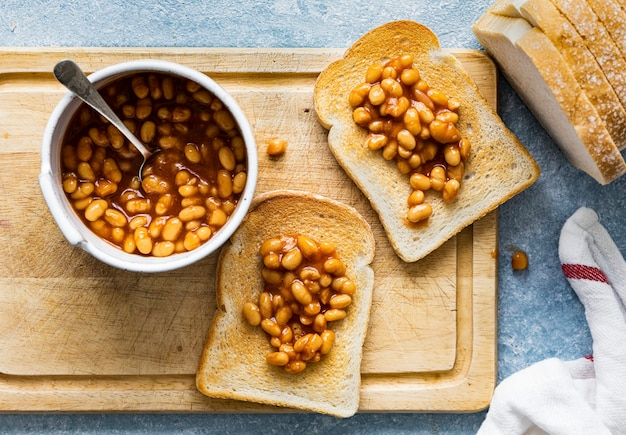

Higher yields
Connexus promotes competitive APYs on select checking, certificates, and savings products.
Connexus Credit Union describes itself as a member-owned financial cooperative focused on better rates, efficient technology, and practical support that helps members build momentum at every stage of life.

Connexus public materials consistently reinforce the value of the credit union model: members are owners, profits are reinvested into rates, services, and technology, and product design centers on long-term financial wellness rather than short-term fee extraction. That identity shows up in promotional checking rewards, certificate specials, lending offers, and a strong emphasis on digital convenience. The organization also pairs remote access with contact center support, community locations, and shared branching so members can choose the channel that fits the moment.
Connexus promotes competitive APYs on select checking, certificates, and savings products.
Membership is designed for people who want a digital-first relationship without giving up personal support.
Online and mobile banking support transfers, payments, secure messaging, and account management.
Beyond accounts and loans, Connexus highlights financial wellness resources, calculators, investment services, and guided conversations that help members compare options before making major decisions. That combination is especially useful for households balancing emergency reserves, homeownership, retirement planning, and debt reduction at the same time. Businesses benefit from access to deposit tools, card services, and financing relationships that can scale with operational needs while staying connected to a recognizable cooperative brand.
Checking, savings, loans, cards, and education resources support everyday money management.
Business banking and financing help owners manage cash flow while maintaining local-style service.
Use secure messaging, book a call, or visit a branch for guided support.